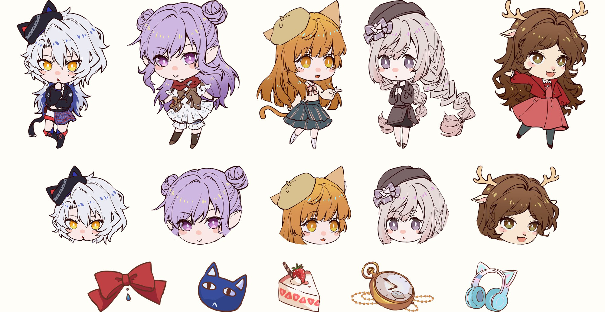
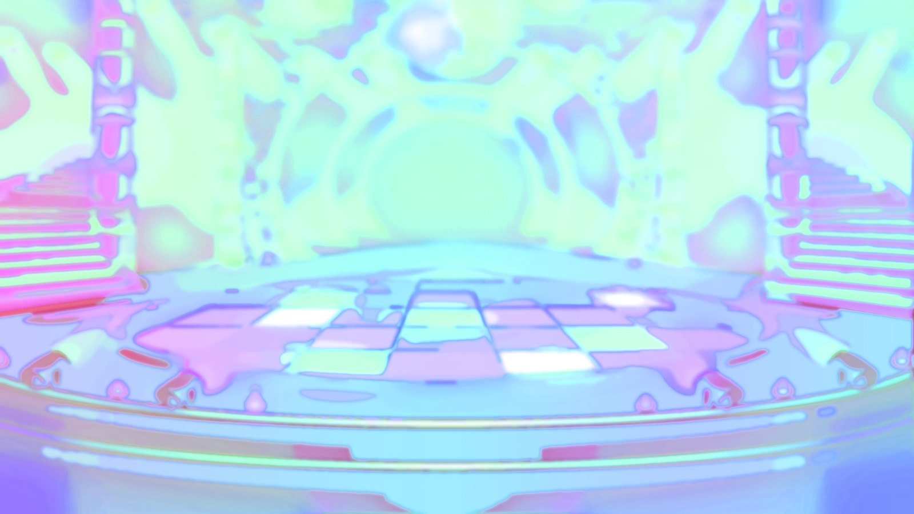
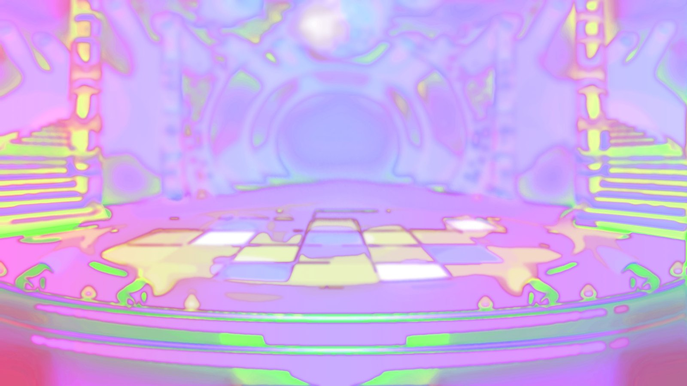
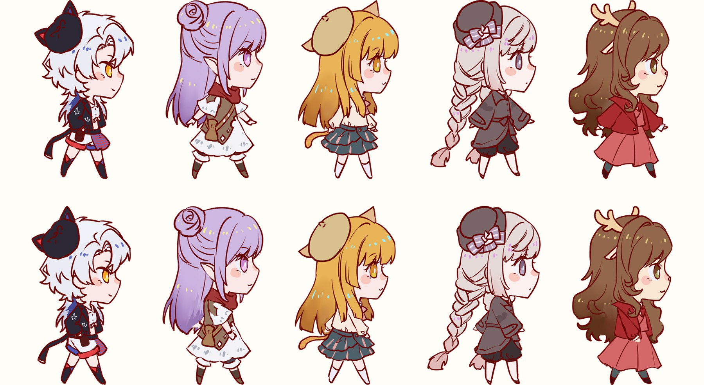
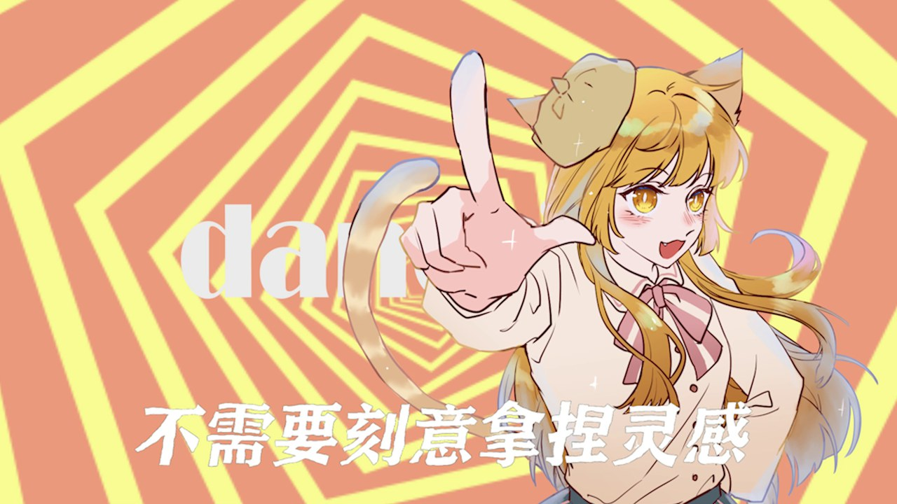
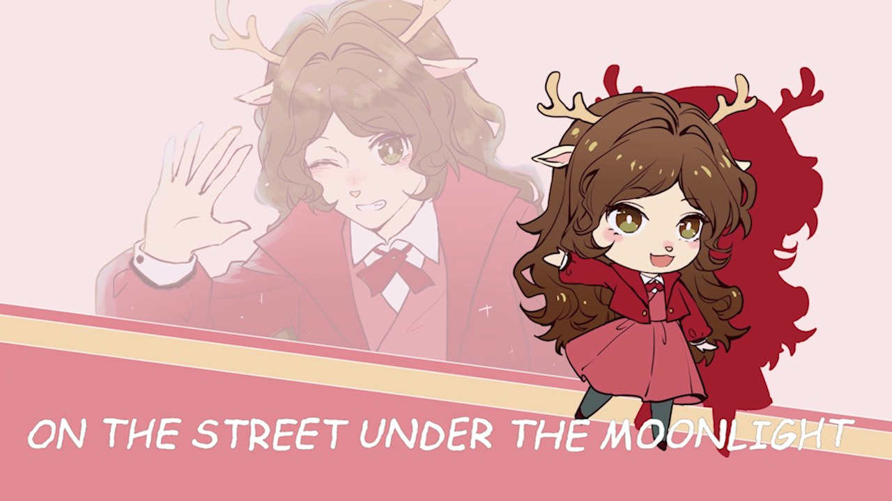
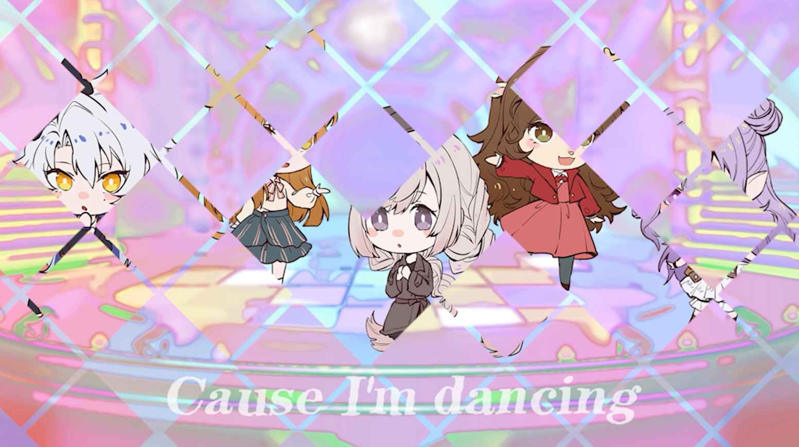

PROJECT 05
Dancing Tonight
An Original OC Hand-drawn Music Video
项目角色：角色设定 · 逐帧手绘 · AE 合成与剪辑 —— 一支原创 OC 手书动画 MV：五个原创角色带着各自的性格登台，完成一次舞台化的自我介绍；从设定、手绘到成片由我完成。
项目角色：角色设定 · 逐帧手绘 · AE 合成与剪辑 —— 一支原创 OC 手书动画 MV：五个原创角色带着各自的性格登台，完成一次舞台化的自我介绍；从设定、手绘到成片由我完成。
这是一支原创 OC 手书动画 MV：设计五个原创角色，各自带着不同的性格与专属符号， 以「轻松愉快的课后生活」为主题，用歌曲把他们串成一段舞台化的叙事—— 青春就是展示美好的时间，希望从课业压力中把心情解脱出来。
成片覆盖角色设定、手绘逐帧、AE 合成与剪辑四个环节， 从纸面设定到最终成片由我完成；成片投递 第四届中国东方文化创意大赛（学生组 · 影视创作类）。
五个角色各有完整立绘、头像与专属符号（蝴蝶结 / 猫 / 蛋糕 / 怀表 / 耳机）， 配色与神情按各自的性格取向设计——手书动画的角色要让观众在一两个动作内认出谁来。

整支 MV 发生在同一座舞台上：主舞台承担群舞与转场，阶梯与拱门给角色的进出留出层次。 场景备了两种色调——同一布景换个冷暖，就能区分歌段的情绪。


流程是手绘 → AE 合成 → PR 剪辑：角色与物件先画成可拆分的部件， 在 AE 里搭出分层（角色 / 物件 / 歌词 / 背景），用逐帧与图层动画让手绘「动」起来， 最后进 PR 对轨、卡点、成片。

1 分 44 秒 · 原创 OC 手书 MV



作品投递第四届中国东方文化创意大赛（学生组 · 影视创作类），获铜奖。
这支手书是我第一次把「画出来的东西」完整推到成片：角色怎么拆分、图层怎么组织、节奏怎么卡， 都要在 AE 与 PR 里一站站解决。相比单张插画，MV 让画面与音乐共同叙事—— 合成与剪辑的经验，后来也直接用在「山海纪」卡面动效的节奏控制上。
返回作品集首页